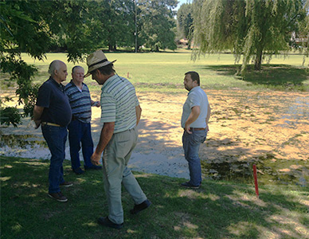

20/01/2018
La ventaja del uso de microorganismos mejorados
Para lograr una aproximación adecuada a la comprensión de tales microorganismos mejorados podríamos decir que, recientemente, los mismos han introducido el mayor cambio conceptual en su utilización masiva para el tratamiento de efluentes. La idea es que los organismos involucrados en los procesos de biodegradación puedan ser trasladados al lugar donde se hallan los residuos.